Ce que vous nous aviez demandé, ce que nous en avons fait, et pourquoi : l'ambiance, les couleurs, les écritures, le logo, la façon dont le site se lit, la vérification complète que nous avons faite, et sa visibilité sur Google et les assistants IA.
Dans votre moodboard, vous nous aviez donné quelques mots, trois sites que vous aimiez, carte blanche sur les couleurs et la mission de proposer un logo. Voici, point par point, ce que nous en avons fait.
| Ce que vous avez écrit | Ce que ça donne sur le site |
|---|---|
| « Épuré, pas trop chargé » | Une seule action par écran, prendre rendez-vous. Beaucoup d'air entre les blocs. Pas de bannière, pas de pop-up, aucune publicité, aucun cookie. |
| « Lumineux » | Un fond ivoire chaud plutôt que blanc froid, et de grandes formes pastel qui glissent derrière les textes comme une lumière du matin. Jamais de noir, jamais de gris. |
| « Peps » | Une seule couleur vive, la framboise, réservée à ce qui compte : les boutons, les mots importants, le lien de rendez-vous. Elle ressort d'autant plus que tout le reste est doux. |
| « Qui donne envie » | La page s'ouvre sur une phrase que le visiteur reconnaît (« Parfois, tout pèse un peu trop ») et se dénoue en lumière quand il fait défiler. Les situations sont dites avec ses mots, pas ceux du métier. |
| « Pas trop carré, de l'espace pour respirer » | Rien n'a d'angle : cartes arrondies, boutons en capsule, médaillons en forme de galet, formes organiques. Une lueur « respire » lentement dans l'accueil, au rythme d'une respiration calme. |
| « Du dégradé et de la transparence » | Les pastels se fondent l'un dans l'autre (pêche, rose, lilas, eau) ; certains blocs sont en verre dépoli, posés sur ces couleurs pour qu'on voie la transparence. |
| Couleur : carte blanche · Logo : une proposition | Une palette créée pour vous (page 3) et un logo, « la rencontre » (page 4). |
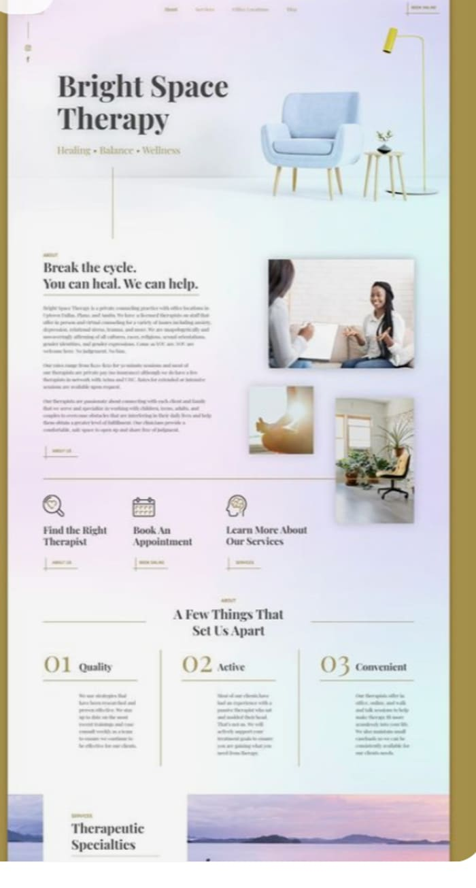
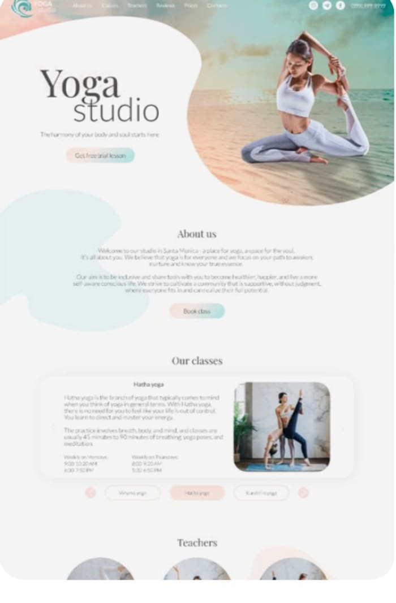
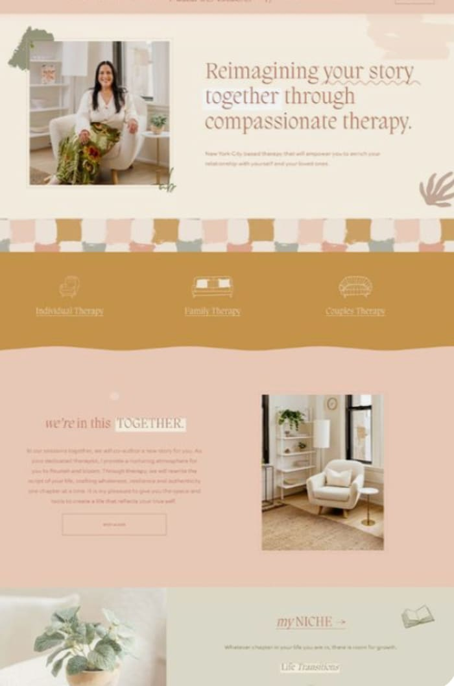
Dix couleurs, pas une de plus. Quatre pastels pour la lumière, deux teintes d'encre pour lire, une couleur vive pour agir, un vert profond pour le volet nutrition, et deux fonds. Chacune a un rôle, et ne sort pas de ce rôle.
L'aurore : pêche → rose → lilas → eau. Ces quatre couleurs ne portent jamais de texte. Elles sont la lumière derrière tout le reste.
Le terracotta est la couleur par défaut du secteur : tous les cabinets l'utilisent. La framboise donne le peps que vous demandiez, évoque la vitalité et la santé, et reste chaleureuse. Utilisée avec parcimonie, elle guide l'œil vers ce qui compte : prendre rendez-vous.
Un blanc pur sur écran éblouit et fait « page vide ». L'ivoire est lumineux mais chaud : le site paraît accueillant dès la première seconde. L'encre aubergine, plus douce que le noir, va dans le même sens.
Rose pour les adolescents et adultes, lilas pour la périnatalité, eau pour les enfants, pêche pour la nutrition : le visiteur s'y retrouve sans lire, de l'accueil jusqu'aux pages.
Chaque couleur de texte a été mesurée sur son fond : les contrastes respectent la norme d'accessibilité (AA), y compris pour les personnes qui voient moins bien les nuances.
Une écriture à empattements, chaleureuse, pour les titres, avec le mot important qui passe en italique framboise ; une écriture simple et très lisible pour tout le reste. Et un logo qui raconte votre métier sans le dire.
Une écriture « à pattes », douce et un peu vivante, qui donne le ton de la maison : sérieuse sans être froide. Dans chaque titre, un mot bascule en italique framboise : c'est lui qui porte le sens, et il reçoit un petit trait de pinceau qui se dessine quand la section apparaît.
Une écriture simple, ronde, très lisible sur téléphone comme sur ordinateur. Elle sert aux paragraphes, aux boutons, à la navigation. Les deux écritures sont hébergées avec le site : aucun appel à un service extérieur, et donc aucune donnée qui part chez Google au chargement.
Deux pétales translucides, un rose et un vert d'eau, qui se croisent. Là où ils se recouvrent naît une amande plus foncée : c'est la rencontre, celle du thérapeute et de la personne, du parent et de l'enfant, du corps et de l'esprit. Vu de loin, le croisement dessine aussi le X de Xénia, sans jamais l'écrire. Il est léger, se reconnaît en tout petit (icône d'onglet, avatar) et vit très bien à côté de votre nom composé en Fraunces.
Le pétale sert de puce devant les titres de liste, les deux pétales flottent dans le ciel de l'accueil, la pastille du pied de page « respire » comme la lueur du hero : un seul vocabulaire, décliné.
Votre nom est écrit à côté du symbole en Fraunces. Si vous souhaitez un jour des cartes de visite ou une plaque, nous figerons l'ensemble « symbole + nom » en fichier imprimable ; ce n'est pas nécessaire pour le site.
Sur ordinateur, la page d'accueil ne s'affiche pas d'un bloc : elle se traverse. Le visiteur fait défiler, et l'histoire se déroule sous ses yeux, du poids vers la lumière. Sur téléphone, la même histoire se joue en trois secondes, sans rien à faire.
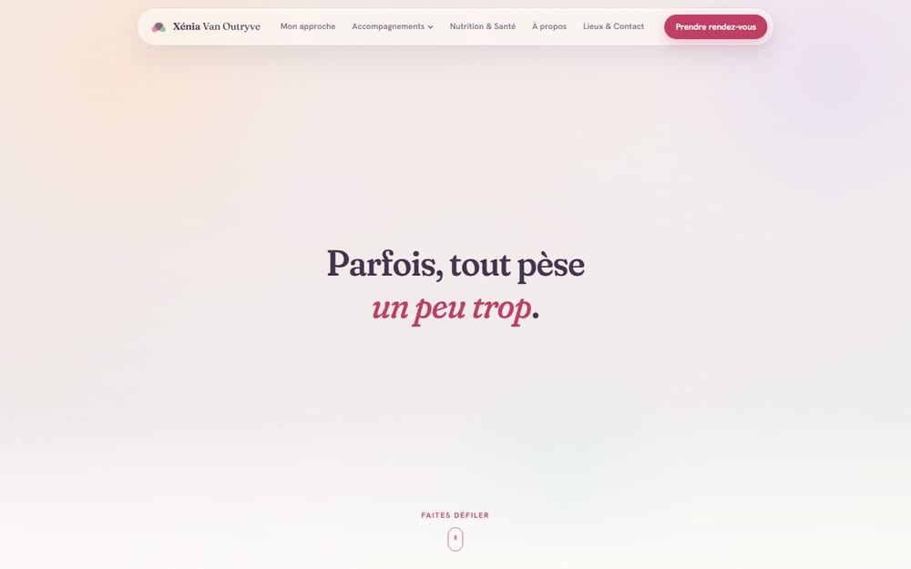
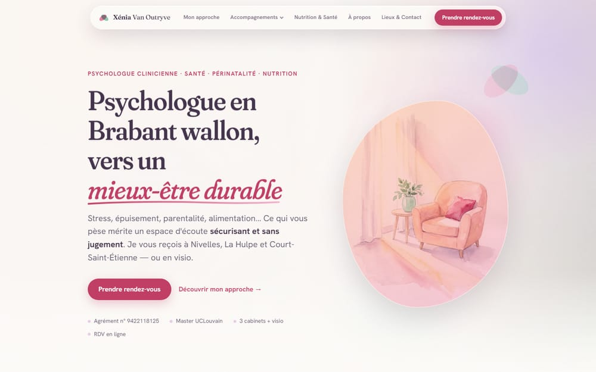
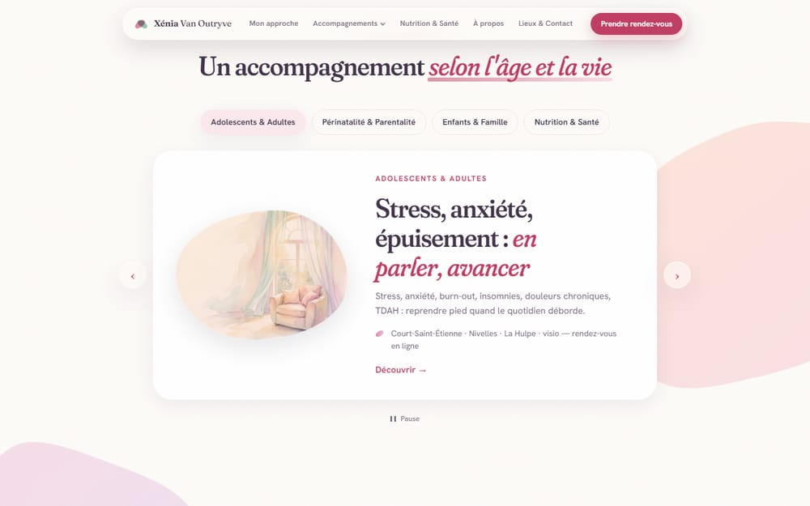
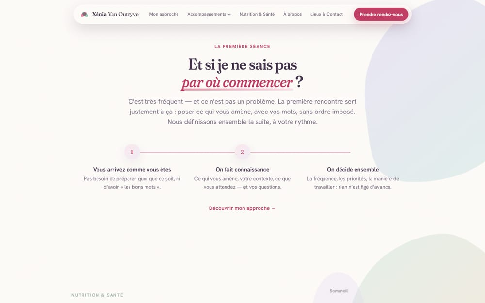
Sous l'accueil, dix capsules défilent lentement : stress, burn-out, périnatalité, TDAH, sommeil… Chacune mène à la bonne page. Le visiteur qui cherche « son » mot le trouve en une seconde.
Chaque mouvement suit le défilement ou la respiration ; aucun clignotement. Et pour les personnes qui préfèrent les écrans immobiles, le site le détecte et affiche tout, calmement, sans animation.
Neuf pages, la même respiration, une teinte par thème.
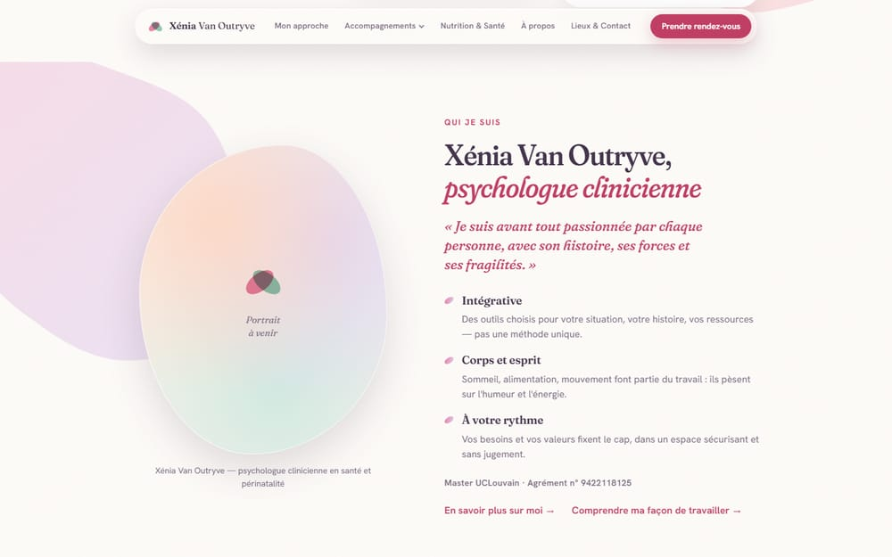
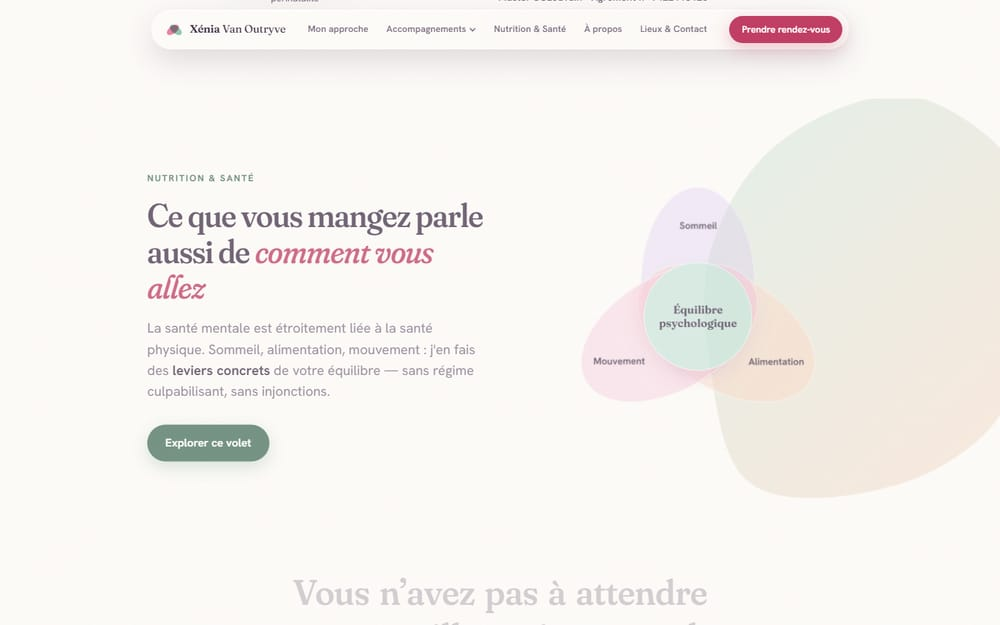
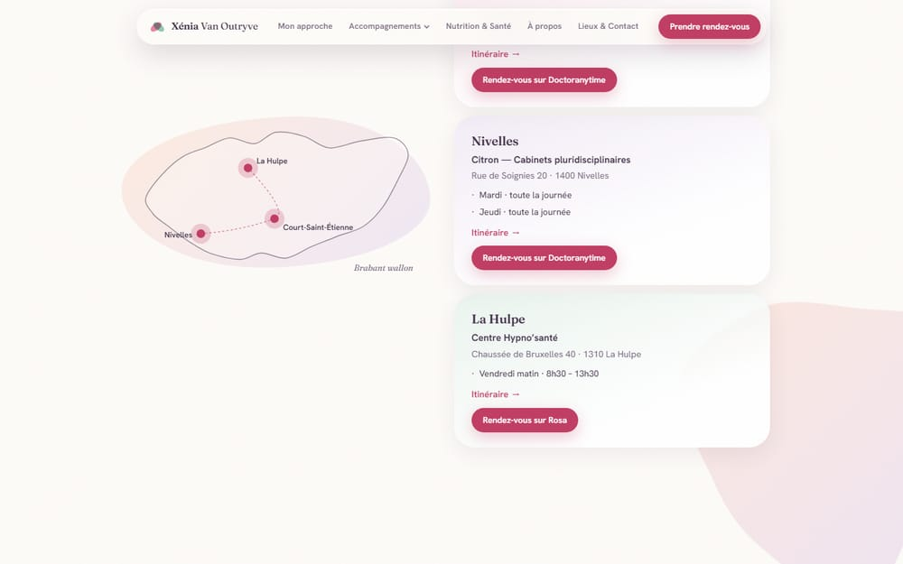
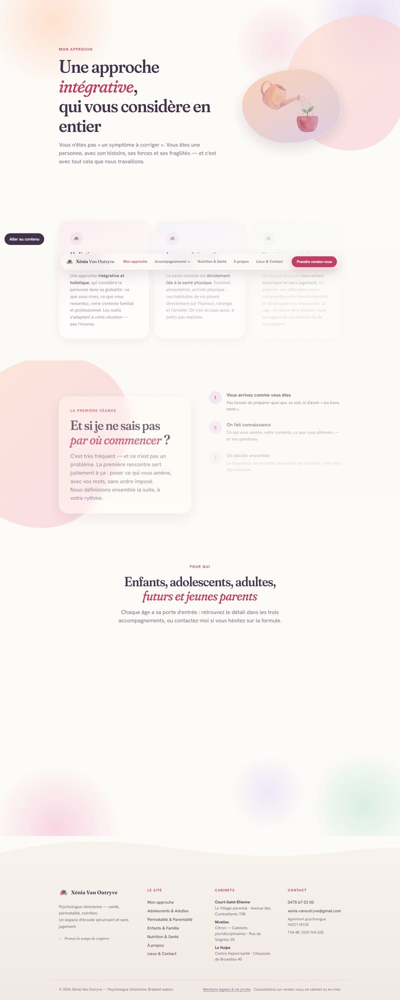
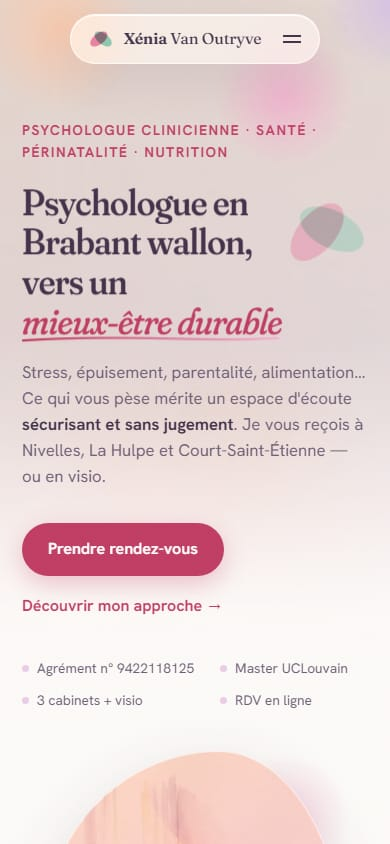
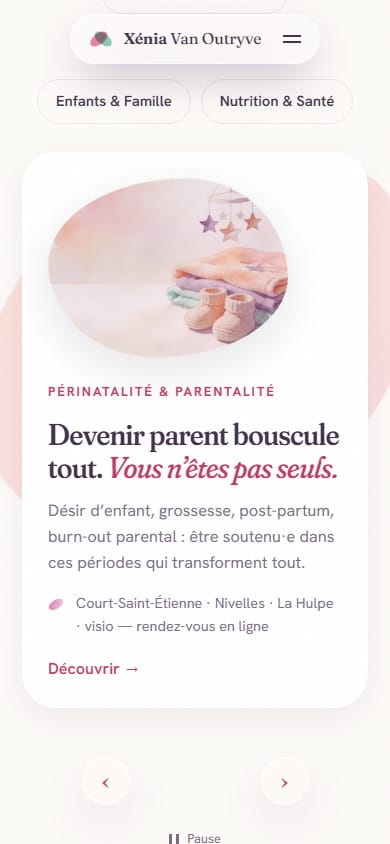
La plupart des visiteurs d'un cabinet arrivent depuis leur téléphone. Tout a été vérifié sur un petit écran : rien ne déborde, le menu s'ouvre d'un geste, le rendez-vous et le téléphone sont à portée de pouce. Le film de l'accueil y est remplacé par une version légère, pour ne pas consommer le forfait.
Chaque page a été passée au peigne fin, par la machine puis à l'œil, sur ordinateur comme sur téléphone. Voici l'état du site.
Score santé / 100
| Quoi | Pourquoi |
|---|---|
| Votre photo | Le cadre en galet de l'accueil et de la page À propos l'attend. Une photo sur fond clair, cadrée buste, suffit. |
| Le nom de domaine | C'est l'adresse que taperont vos patients, et le point de départ du référencement. Nous le déposons et le branchons dès que vous l'avez choisi. |
| Votre adresse | Les mentions légales doivent indiquer l'adresse de l'éditrice du site, distincte des cabinets où vous consultez. |
| Vos tarifs | La page Lieux & Contact annonce le paiement mobile et parle des mutualités avec prudence ; les montants exacts sont à vous. |
Deux notes sur 100, mesurées sur le site tel qu'il sera mis en ligne. La première dit si Google comprend bien vos pages (le référencement, ou SEO). La seconde dit si un assistant comme ChatGPT peut lire, comprendre et citer votre site quand on lui demande un psychologue en Brabant wallon (ce qu'on appelle GEO).
Google · SEO
Assistants IA · GEO
Pour situer : un site vitrine construit sans attention particulière tourne souvent autour de 50 à 60. Au-dessus de 90, tout ce qui dépend de la construction du site est en place ; ce qui reste dépend du temps, du nom de domaine et de ce que vous nous donnerez.
1. Votre photo (fond clair, cadrage buste). 2. Le nom de domaine que vous préférez. 3. Votre adresse pour les mentions légales. 4. Vos tarifs et moyens de paiement. 5. Votre accord sur l'aquarelle du cabinet de l'accueil, qui restera à côté de votre photo. Dès réception, nous mettons le site en ligne sur votre domaine et le déclarons à Google.